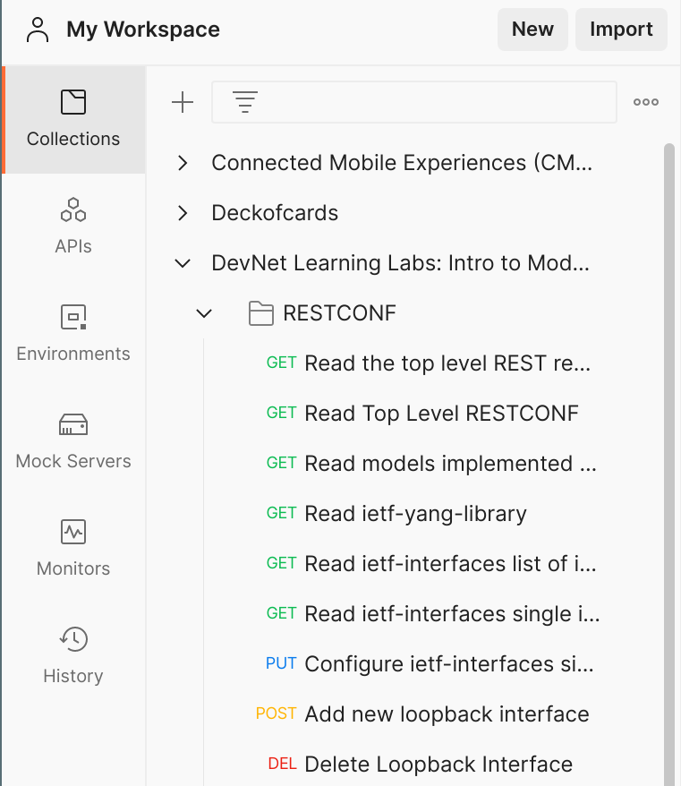

Exercises: RESTCONF on Reserved Machine
Table of Contents
Preparation
Make sure to set up the connection to your reserved machine.
Retrieving Data
Let's look at some of the example Postman queries. This time we will run them against our reserved devnet machines. Soon we will apply the same REST calls in a Python script.
Use Postman for the following exercises:
Retrieve simple data
Each of the following is already defined as an example REST message.

Make sure to select the environment for your reserved machine.
Run each of the following. Make sure that you understand the structure of the URL and the structure of the data that gets sent back.
- Retrieve the hostname of the machine
- Retrieve the list of all interfaces (does the IP address match your devnet machine?)
- Retrieve the operational state of all interfaces
Retrieve specific data
Retrieve only a single interface. This is also defined as an example message.
Then, change the query so that you can r etrieve interface 1, 2, or 3.
Run the example that retrieves the operational state for all interfaces.
Then, change this query so that you can retrieve the operational state for a specific interface.
Making Changes
Configuration
Run the example that configures an interface (this is a PUT request).
Change the BODY of the request:
- set the description to your name
- change the ip address
After that, get the info for all interfaces to check that it works.
Change hostname
Now, add a NEW request to change the hostname to something different (like your name).
You need to create a PUT request to the URL for the hostname. Take a good look at other PUT requests and see if you can make this happen.
Run the "Read native hostname" to check that it worked!
YANG
The layout of a RESTCONF URL is:
https://<ADDRESS>/<ROOT>/data/<[YANG MODULE:]CONTAINER>/<LEAF>
Where the parts in capital letters mean the following:
| ADDRESS | The IP (or DNS Name) and Port where the RESTCONF agent is available. |
| ROOT | This is usually "restconf" |
| [YANG MODULE:]CONTAINER | The base model container being used. Inclusion of the module name is optional. |
| LEAF | An individual element from within the container. |
Now please visit the following YANG repository for retrieving operational data:
Based on this file and the explanation above:
- Please create a GET request that retrieves the operational data for all interfaces on your machine.
- Can you make the request so that it ONLY shows the device inventory, not the system data?